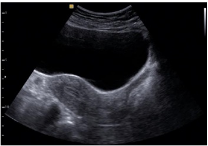
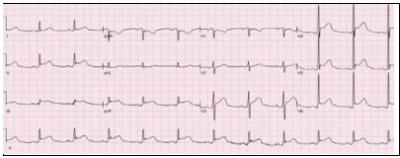
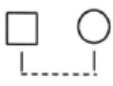
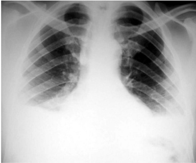

Questão 1 · Fisiopatologia · 4000181854A necrobiose asséptica, também conhecida como degeneração rubra ou vermelha, corresponde ao infarto hemorrágico do leiomioma. Esse tipo de degeneração ocorre, principalmente, durante o uso de
A TH combinada do climatério.
B gestrinona.
C leuprorrelina.
D testosterona.
Questão 2 · Exames complementares · 4000181853O exame mais sensível para mapear miomas, antes da miomectomia, é
A a ultrassonografia pélvica.
B a ultrassografia endovaginal.
C a tomografia computadorizada da pelve.
D a ressonância nuclear magnética da pelve.
Questão 3 · Ginecologia · Tratamento · 4000181852Adolescente de 17 anos, com dismenorreia primária, moderada a grave, sem alterações do uxo menstrual e sem sexarca tem como primeira escolha o tratamento com os
A anticoncepcionais hormonais combinados em esquema estendido.
B anti-inflamatórios não hormonais durante a menstruação.
C antiespasmódicos associados aos analgésicos comuns, durante a menstruação.
D antiespasmódicos associados aos anti-inflamatórios não esteroidais, durante a menstruação.
Questão 4 · Diagnóstico e Exames Complementares · Ginecologia · Terapia hormonal · 4000181851O objetivo primordial da terapêutica hormonal (TH) é o tratamento dos sintomas vasomotores associados ao climatério. Nesse sentido, o a SOBRAC (Sociedade Brasileira de Climatério) e a FEBRASGO (Federação Brasileira de Ginecologia e Obstetrícia) orientam às pacientes em uso de TH
A a realização de ultrassonografia mamária e endovaginal.
B a realização anual de exames de mamografia.
C a realização de ultrassonografia endovaginal quando pacientes apresentarem sangramento uterino.
D a realização de exames complementares depois de efetuado rastreio de doenças cardiovasculares em usuárias de TH.
Questão 5 · Rastreamento mamográf ico · 4000181850Os métodos existentes para a detecção precoce do câncer de mama não reduzem a incidência, mas podem reduzir a mortalidade pela doença. Nesse sentido, o Ministério da Saúde preconiza que, na população de risco padrão para o câncer de mama, o rastreio seja realizado pela mamografia,
A em intervalos bianuais, em mulheres entre 50 e 69 anos.
B em intervalos anuais, em mulheres entre 40 e 69 anos.
C em grupo familiar menor que 40 anos, com antecedente positivo para o câncer de mama, em mulheres com idade menor que 40 anos.
D em meio familiar, com antecedente familiar positivo para o câncer de mama, em mulheres com idade superior a 70 anos.
Questão 6 · Escolha de testes diagnósticos para rastreamento · 4000181849A realização de sorologias para o rastreamento de sífilis e HIV em mulheres com idade < 30 anos deve ser feita
A anualmente.
B semestralmente.
C imediatamente após exposição de risco para IST.
D anualmente, independentemente da faixa etária.
Questão 7 · Ginecologia · Incontinência urinária aos esf orços · Tratamento · 4000181848A injeção dos chamados agentes de preenchimento na submucosa da uretra é um método minimamente invasivo, disponível para tratar mulheres com
A bexiga hiperativa e dissinergia do músculo detrusor.
B urgeincontinênica urinária em pacientes idosas com mobilidade uretral.
C IUE decorrente de defeito esfincteriano intrínseco e ausência de mobilidade uretral.
D urgeincontinênica urinária sem defeito esficteriano e ausência de mobilidade uretral.
Questão 8 · Pediatria · Puberdade Precoce Perif érica · 4000181847O tratamento inicial para a puberdade precoce, decorrente da Síndrome de McCune Albright, é
A o tamoxifeno.
B o letrozol ou a leuprorrelina.
C a gosserrelina.
D o acetato de medroxiprogesterona
Questão 9 · Ciclo uterino · Ginecologia · 4000181846Analise a imagem ultrassonográfica a seguir. A via de realização dessa ultrassonografia e a fase do ciclo menstrual na qual se encontra o útero são, respectivamente,

A a via abdominal e a fase progestagênica.
B a via abdominal e a fase estrogênica.
C a via endovaginal e a fase progestagênica.
D a via endovaginal e a fase estrogênica.
Questão 10 · Colposcopia · 4000181845A fase do ciclo mais adequada para a realização da colposcopia é
A a primeira fase.
B a segunda fase.
C o pré-menstrue.
D a pré-ovulatória.
Questão 11 · Diretrizes para o rastreamento · 4000181844No rastreamento do câncer de colo no Brasil, o Ministério da Saúde tem indicado que
A a citologia seja repetida com intervalo de 6 meses, em mulheres com idade superior a 30 anos, com resultado mostrando ASC-US.
B a citologia pode ser realizada a cada cinco anos, entre a idade de 30 a 64 anos, desde que dois exames, com intervalos anuais, sejam negativos.
C o início do rastreamento seja realizado a partir de 25 anos de idade, em todas as mulheres que iniciaram atividade sexual.
D o rastreamento com citologia em todas as mulheres com idade entre 25 a 64 anos, com atividade sexual, em intervalos trienais.
Questão 12 · Ginecologia · Terapia hormonal · 4000181843Mulher de 55 anos de idade, pós-menopausada há cinco anos e sem sintomas vasomotores deverá ser tratada para dispareunia com diminuição secundária do desejo sexual, salvo contraindicações, inicialmente com
A terapia sexual.
B testosterona transdérmica.
C associação de estradiol + progestágeno sistêmica.
D estrógenos tópicos via vaginal.
Questão 13 · Sif ilis na gestação · Obstetrícia · 4000181842A principal via de transmissão vertical da sífilis se dá
A pela via transplacentária.
B pela via vaginal.
C contaminação durante o parto.
D durante a amamentação
Questão 14 · Obstetrícia · Gestação múltipla gestação gemelar · 4000181841O acompanhamento e a conduta nas gestações gemelares baseiam-se fundamentalmente no tipo de corionicidade, quando as gestações
A dicoriônicas apresentam duas placentas e uma cavidade monoamniótica.
B monocoriônicas diamnióticas apresentam uma placenta e duas cavidades amnióticas.
C monocoriônicas monoamnióticas apresentam duas placentas e duas cavidades amnióticas.
D monocoriônicas monoamnióticas com fetos unidos apresentam duas placentas e uma cavidade amniótica.
Questão 15 · Distúrbios hipertensivos na gestação DHEG · Obstetrícia · 4000181840A esteatose hepática aguda da gravidez (EHAG), caracterizada por insu ciência hepática aguda associada à falência de múltiplos órgãos, é uma emergência obstétrica potencialmente fatal para a mãe e para o bebê. O principal diagnóstico diferencial com a EHAG é
A a Síndrome hepatorrenal.
B a Síndrome HELLP.
C as Hepatites virais.
D a Eclampsia.
Questão 16 · Distúrbios hipertensivos na gestação DHEG · Obstetrícia · 4000181839Leia o caso clínico. Gestante de 32 semanas, antecedentes de hipertensão pré-gestacional e insu ciência pulmonar, chega ao pronto atendimento com PA=180/120 mmHG e edema agudo de pulmão. Nessa situação, a droga de eleição deve ser
A a hidralazina.
B a nifedipina.
C o sulfato de magnésio.
D o nitroprussiato de sódio.
Questão 17 · Distúrbios hipertensivos na gestação DHEG · Obstetrícia · 4000181838Leia o caso clínico. Primigesta inicia o pré-natal tardiamente, quando, com 28 semanas de gestação, apresenta PA=>140/90 mmHG, sem referências a respeito da PA pré-gestacional. No rastreio laboratorial, encontram - se plaquetas=95.000/mm³, TGO=80 U/L e TGP=90 UL, sem proteinúria. Nesse caso, o diagnóstico correto da Síndrome Hipertensiva é o de hipertensão
A pré-gestacional.
B gestacional transitória.
C pré-eclâmpsia.
D síndrome HELLP.
Questão 18 · Obstetrícia · Doença hemolítica perinatal DHPN · 4000181837Leia o caso clínico. Gestante com 34 semanas e 4 dias, isoimunizada, apresenta doppler uxometria com PVS-ACM (Velocidade do Pico Sistólico da Artéria Cerebral Média) > que 1,5 múltiplo de mediana. Nessa situação, a conduta indicada é a realização de
A cordocentese e transfusão sanguínea fetal.
B corticoterapia e interrupção da gestação.
C interrupção imediata da gestação.
D realização de cardiotocografia fetal.
Questão 19 · Obstetrícia · Alteração do volume de líquido amniótico ILA · 4000181836A principal causa de oligoâmnio em nosso meio é
A a rotura prematura das membranas.
B a insuficiência placentária da pré-eclâmpsia.
C as malformações fetais do sistema neurológico.
D as malformações fetais do sistema urinário.
Questão 20 · Distúrbios hipertensivos na gestação DHEG · Obstetrícia · 4000181835Gestante de 36 semanas dá entrada em pronto-atendimento obstétrico, com PA: 160/110 mmHG, crises convulsivas e feto vivo. Nessa situação, o controle das crises convulsivas deverá ser realizado, inicialmente, com
A a hidralazina.
B o midazolan.
C o sulfato de magnésio.
D a interrupção imediata da gestação.
Questão 21 · Obstetrícia · Gestação ectópica · 4000181834O metotrexato é um medicamento utilizado para tratar gestação ectópica. Constitui contraindicação para esse tratamento:
A massa anexial <= 3,5 cm.
B estabilidade hemodinâmica.
C embrião morto.
D trombocitopenia.
Questão 22 · Abortamento · Obstetrícia · 4000181833Foi feita a opção de conduta expectante em um quadro de aborto espontâneo, com 6 semanas, retido e sem sinais de infecção. Após quatro semanas, não havendo resolução espontânea do quadro, a conduta indicada para esse caso será
A a indução do aborto com misoprostol.
B a realização da curetagem uterina.
C a realização da AMIU (Aspiração Manual Intrauterina).
D a manutenção da conduta expectante.
Questão 23 · · 4000181832Razão de Near Miss Materno RNMM ou Razão de quase perda e Condições Potencialmente Ameaçadoras à Vida CPAV O near miss materno (NMM) é um indicador de
A mortalidade.
B morbidade.
C letalidade.
D contaminação.
Questão 24 · · 4000181831Conceitos f undamentais óbito materno óbito por causa materna causas obstétricas diretas e causas obstétricas indiretas Leia o caso clínico. Adolescente de 17 anos provoca um aborto e chega à urgência com restos ovulares infectados. Mesmo com os procedimentos corretos, ela vai a óbito por septicemia, 35 dias depois. A morte, nesse caso, é considerada
A não materna.
B não obstétrica.
C obstétrica direta.
D obstétrica indireta.
Questão 25 · Hepatite B crônica · 4000181830Leia o caso clínico. Homem de 35 anos com história de hepatite há um ano. O médico assistente solicitou exames para hepatite A, B e C, cujos resultados foram os seguintes: Anti-HBc IgG = positivo / HBsAg = positivo / HBeAg = positivo / DNA HBV = 2.008.545 UI/mL / ALT = 35 U/mL (VR: < 40 UI/mL) / Anti-HAV IgG = positivo / Anti-HAV IgM = negativo / Anti-HCV = negativo. Após seis meses, os exames foram repetidos e apresentaram: HBsAg = positivo / HBeAg = positivo / DNA HBV = 108 UI/mL / ALT = 38 U/mL Qual é o diagnóstico do paciente?
A Infecção crônica pelo HBV, sem sinais de inflamação hepática atual.
B Hepatite B pregressa, em fase de cura virológica.
C Infecção crônica pelo HBV, com inflamação hepática atual.
D Cirrose hepática por HBV.
Questão 26 · Linf omas Gástricos · 4000181829O linfoma do tipo MALT gástrico apresenta-se normalmente como uma doença indolente e multifocal com sintomas inespecíficos do trato digestivo. Qual seria a melhor opção relacionada ao tratamento da patologia em questão?
A O único tratamento curativo possível do linfoma MALT é a gastrectomia total associado a quimioterapia.
B Os Sintomas B (febre, calafrios e perda de peso) são de aparecimento precoce e relacionam-se a menor resposta ao tratamento do linfoma MALT.
C A erradicação do H. pylori pode regredir a neoplasia nos estágios iniciais.
D A infecção por H. pylori acomete cerca de 50% dos casos e o tratamento do H. pylori não possui impacto no tratamento do linfoma MALT.
Questão 27 · Tratamento · 4000181828Um jovem previamente hígido de 22 anos dá entrada na emergência com dor em pontada no hemitórax esquerdo e febre após 3 dias de um quadro de gastroenterocolite aguda. Ao exame físico, apresentava com FC = 70bpm, PA 100x60mmHg e Temp. 37,80 . A dosagem laboratorial de troponina foi de 2.000ng/ml (VR < 0,04ng/ml) e o eletrocardiograma foi o seguinte: Nesse caso, o tratamento adequado é o da indicação de

A aspirina e clopidogrel.
B anti-inflamatório não hormonal e colchicina.
C corticoesteroides e nitrato.
D heparina, aspirina e clopidogrel.
Questão 28 · Eletrocardiograma · Ecocardiograma · Quadro clínico · 4000181827Um jovem previamente hígido de 22 anos dá entrada na emergência com dor em pontada no hemitórax esquerdo e febre após 3 dias de um quadro de gastroenterocolite aguda. Ao exame físico, apresentava com FC = 70bpm, PA 100x60mmHg e Temp. 37,80 . A dosagem laboratorial de troponina foi de 2.000ng/ml (VR < 0,04ng/ml) e o eletrocardiograma foi o seguinte: Qual dos exames a seguir deverá ser solicitado nesse caso?

A Cateterismo cardíaco.
B Angiotomografia de coronárias.
C Cintilografia do miocárdio.
D Ecocardiograma.
Questão 29 · Diagnóstico dif erencial · Quadro clínico · 4000181826Um jovem previamente hígido de 22 anos dá entrada na emergência com dor em pontada no hemitórax esquerdo e febre após 3 dias de um quadro de gastroenterocolite aguda. Ao exame físico, apresentava com FC = 70bpm, PA 100x60mmHg e Temp. 37,80 . A dosagem laboratorial de troponina foi de 2.000ng/ml (VR < 0,04ng/ml) e o eletrocardiograma foi o seguinte: O quadro clínico apresentado sugere como diagnóstico:

A infarto agudo do miocárdio com supra desnivelamento do segmento ST.
B dissecção de coronária.
C miopericardite.
D vasoespasmo coronariano.
Questão 30 · Ginecologia · Etiologia · 4000181825Leia o caso clínico: uma mulher de 18 anos de idade vem sentindo desconforto pélvico há vários meses. Ao exame ginecológico, há massa anexial direita de 10cm. A TC do abdome revela que a massa parece ser sólida e circunscrita. Com a remoção cirúrgica, a massa é sólida e branca, com pequenas áreas de necrose. Microscopicamente, contém principalmente células mesenquimais primitivas, juntamente com um pouco de cartilagem, músculo e focos de diferenciação neuroepitelial. Qual é o diagnóstico mais provável?
A Tumor do seio endodérmico.
B Disgerminoma.
C Teratoma imaturo.
D Tumor mülleriano misto maligno.
Questão 31 · Gastroenterologia · 4000181824Leia o caso clínico. Nos últimos 3 meses, uma mulher de 45 anos de idade relatou que sua pele se tornou progressivamente amarela. No exame físico, ela estava febril e apresentava icterícia esclerótica e generalizada. As análises laboratoriais mostravam bilirrubina sérica total de 8,9 mg/dL; bilirrubina direta de 6,8 mg/dL; AL sérica de 125 U/L; e AST sérica de 108 U/L. A amostra da biópsia hepática mostrou características histológicas de colangite esclerosante. Qual é a doença do trato gastrintestinal mais provável de coexistir com a doença hepática?
A Pancreatite crônica.
B Diverticulose.
C Colite ulcerativa.
D Ulceração péptica.
Questão 32 · Transtornos Conversivos · 4000181823Trata-se de um transtorno constituído por sintomas que afetam funções motoras/sensoriais voluntárias, sugerindo etiologia neurológica, embora seja causado por fatores psicológicos. Costuma ser precedido por forte estresse emocional, apesar de não haver intencionalidade na produção de sintomas. Historicamente, já foi chamado de “Histeria”, termo em desuso hoje. A nomenclatura atual desse transtorno é
A Transtorno de Sintomas Somáticos.
B Transtorno Hipocondríaco.
C Transtorno Factício.
D Transtorno Conversivo.
Questão 33 · Subtipos da Depressão · 4000181822Leia o caso clínico. Paciente masculino, adulto jovem, sem antecedentes patológicos ou psiquiátricos prévios, apresentando, há vinte dias, sentimento de vazio emocional a maior parte do tempo, anedonia, hipersonia, sensação de fraqueza muscular e aumento do apetite. Relata estar bastante sensível a frustrações e eventos cotidianos interpretados como adversos, embora note amenização dos sintomas quando recebe notícias positivas. O diagnóstico mais provável é o de
A Transtorno Depressivo Maior com características mistas.
B Transtorno Depressivo Maior com características atípicas.
C Transtorno Depressivo Maior com características melancólicas.
D Transtorno de Ajustamento com humor deprimido.
Questão 34 · Dermatologia · Apresentação clínica · 4000181821As lesões da dermatite atópica nas crianças maiores de 10 anos de idade ocorrem mais frequentemente nas
A pregas antecubitais e poplíteas.
B pregas flexoras dos braços, do pescoço e das pernas.
C nádegas.
D áreas de contato com roupas de vestir.
Questão 35 · Dermatologia · Apresentação clínica · 4000181820A dermatite atópica é a dermatose mais frequente na infância e, nos lactentes, as lesões ocorrem mais comumente
A na face.
B nas pregas antecubitais.
C nas nádegas.
D no dorso das mãos e pés.
Questão 36 · Tratamento · 4000181819O tratamento para anemia ferropriva, de acordo com o consenso da Sociedade Brasileira de Pediatria (SBP) de 2021, consiste na administração de
A ferro elementar na dose de 3 a 6 mg/kg/dia por 6 meses.
B ferro elementar na dose de 1 a 2 mg/kg/dia por 6 meses.
C glicinato férrico na dose de 0,5 mg/kg/dia por até 30 dias.
D glicinato férrico na dose de 2 a 4 mg/kg/dia por 12 meses.
Questão 37 · Pediatria · Puericultura · 4000181818Ao ser discutido sobre o uso correto da tecnologia em prol de um desenvolvimento neuropsicomotor satisfatório na infância e na adolescência, a SBP preconiza que o tempo de exposição a mídias deve ser
A entre 1 a 2 horas ao dia para crianças entre 2 e 3 anos completos.
B tempo zero para crianças até 2 anos de idade.
C de até 3 horas diárias para crianças entre 3 e 6 anos.
D no máximo de 4 horas ao dia (com intervalos) para crianças maiores de 6 anos de idade.
Questão 38 · Vacina BCG · 4000181817A vacina BCG, de acordo com o calendário vacinal de 2021 da SBP,
A deve ser administrada em dose única.
B deve ser aplicada a partir de 30 dias de vida.
C pode ser celular ou acelular.
D pode ser proscrita aos filhos de mães com tuberculose prévia.
Questão 39 · Vacina pneumo 13valente · 4000181816De acordo com o calendário de vacinação da Sociedade Brasileira de Pediatria (SBP) de 2021, a vacina pneumocócica conjugada deve ser aplicada nas crianças:
A a partir de 9 meses e a cada 3 meses, até 18 meses de idade.
B com 3, 6, 9 e 12 meses de vida.
C a partir de 1 ano e a cada 2 meses, até 2 anos de idade.
D com 2, 4, 6 e 12 meses de vida.
Questão 40 · Apresentação Clínica · 4000181815Leia o caso clínico. RN, lho de mãe sem pré-natal, a termo, com APGAR 9/9, evolui em seguida ao parto, com desconforto respiratório progressivo e eliminação em excesso de secreção salivar espumosa pela boca e narinas. Nesse caso, qual é a patologia do RN?
A Obstrução de coanas.
B Hérnia diafragmática.
C Atresia de esôfago.
D Cisto broncogênico.
Questão 41 · Etiologia e Epidemiologia · 4000181814Qual é o tipo de rinite mais comum em crianças com idade pré-escolar?
A Infecciosa.
B Idiopática.
C Alérgica.
D Não infecciosa e não alérgica.
Questão 42 · Pediatria · Síndrome de Down · 4000181813Criança com suspeita de síndrome genética, com cariótipo cujo resultado é 47, XY, +21, possui a síndrome de:
A Edwards.
B Klinefelter.
C Turner.
D Down.
Questão 43 · Anatomia Testicular e do Cordão Espermático · Hidrocele · 4000181812É característica da varicocele em crianças e adolescentes:
A apresentar aumento do volume escrotal com dor associada.
B ser mais frequente na fase pré-puberal.
C ser predominantemente unilateral e à esquerda.
D apresentar a confirmação de seu diagnóstico com radiografia contrastada das veias testiculares.
Questão 44 · Teste da orelhinha · 4000181811Qual exame auditivo deve ser realizado em crianças que permaneceram internadas em UTI-Neonatal por mais de 5 dias?
A Emissões otoacústicas evocadas.
B Potencial evocado auditivo de tronco encefálico.
C Audiometria de campo livre.
D Impedanciometria.
Questão 45 · Anticolinérgicos · 4000181810Qual medicamento é um antagonista muscarínico de ação prolongada, indicado para uso em crianças maiores de 6 anos com asma moderada ou grave não controladas?
A Omalizumabe.
B Brometo de tiotrópio.
C Salmeterol.
D Mepolizumabe.
Questão 46 · Clínica Médica · Inf ectologia · Tratamento Medicamentoso · 4000181809Qual é a classe de antibióticos com propriedades farmacológicas semelhantes (ação antimicrobiana e anti-inflamatória) que são utilizados com eficácia em crianças com infecções graves de vias aéreas inferiores?
A Aminoglicosídeos.
B Cefalosporinas.
C Glicopeptídeos.
D Macrolídeos.
Questão 47 · Pediatria · Asma · 4000181808São considerados comorbidades mais comuns da asma grave na infância e na adolescência:
A obesidade; disfunção das cordas vocais; fatores psicossociais.
B doença do refluxo gastroesofágico; sinusopatias; síndrome de Down.
C apneia obstrutiva do sono; esofagite eosinofílica; bronquiolite.
D rinossinusite crônica; anemia ferropriva; talassemia.
Questão 48 · Pediatria · Asma · 4000181807Qual exame é importante na avaliação da asma em crianças?
A Estudo do perfil de interferon.
B Estudo da expressão de células polimorfonucleares.
C Citologia de escarro induzido.
D Fração de óxido nítrico inalado.
Questão 49 · Diagnóstico · 4000181806A sinusite pode ser confundida com asma em crianças e em adolescentes. Para se fazer o diagnóstico diferencial entre elas, é de suma importância que se faça
A tomografia computadorizada de tórax, de alta resolução.
B tomografia computadorizada de seios da face.
C radiografia de seios da face.
D ressonância nuclear magnética de tórax.
Questão 50 · Classif icação · Classif icação conf orme controle · 4000181805De acordo com a American Thoracic Society junto com a European Respiratory Society, a asma grave definida de acordo com seu tratamento, é a patologia que necessita de
A altas doses de corticosteroide inalado, associadas a um segundo medicamento de controle.
B medicação endovenosa e medicação subcutânea, ambas de emergência.
C uma medicação endovenosa e outra medicação oral, ambas de controle.
D altas doses de medicação subcutânea e por via oral, já de uso habitual.
Questão 51 · Clampeamento tardio do cordão · 4000181804Quando deve ser clampeado o cordão umbilical de um recém-nascido (RN) a termo com boa vitalidade?
A Imediatamente após o nascimento.
B Até 60 segundos após o nascimento.
C Entre 1 e 3 minutos de vida do RN.
D Após 3 minutos de vida do RN.
Questão 52 · Hipoglicemia · 4000181803Leia o caso clínico. Uma jovem com diabetes mellitus não controlado é encontrada, caída, na porta de um restaurante. Ao ser socorrida, recobrou a consciência e a rmou ter sentido tonturas e rubor facial ao ingerir uma refeição. Curiosos negam movimentos involuntários. A jovem refere já ter experimentado eventos semelhantes. Sua glicemia capilar é de 77 mg/dL, a pressão arterial de 85/46mm e cetonas negativas na urina. O quadro apresentado por essa jovem foi de
A síndrome hiperosmolar hiperglicêmica não cetótica.
B cetoacidose diabética.
C hipoglicemia e hipotensão pós-prandial.
D hipoglicemia convulsogênica.
Questão 53 · Neurologia · Tratamento · Def inição e Etiologias · 4000181802Leia o caso clínico. Um paciente com histórico de epilepsia é trazido ao prontoatendimento por crises convulsivas. Sua mãe refere que as crises têm duração de dois a três-minutos. O paciente manifestou três crises seguidas, sem retorno ao seu estado basal. O passo seguinte de manejo clínico desse paciente é o de ofertar o seguinte medicamento:
A levetiracetam.
B fenitoína.
C fenobarbital.
D diazepam.
Questão 54 · Quadro Clínico e Indicações de Tomograf ia de Crânio · Neurologia · Hematoma Subdural · 4000181801Leia o caso clínico. Um idoso com doença de Parkinson há mais de 10 anos passa A apresentar quedas frequentes em domicílio. Familiares se preocupam com quadro parecido com demência no último mês. Família o leva a consulta com neurologista, que percebe sonolência excessiva, desatenção, dificuldade de obedecer a comandos, além de hemiparesia esquerda leve. De acordo com o exposto, sua tomografia de crânio deve mostrar, no lado direito de seu cérebro,
A hematoma epidural.
B AVC de artéria cerebral média.
C hematoma subdural.
D hemorragia em núcleos da base.
Questão 55 · Ciclo Básico Graduação em Medicina · 4000181800O primeiro método de imagem Raios-X descobertos em 1895, permitiu a demonstração dos diferentes tecidos do corpo humano tem um número preciso de densidade radiológica é o
A 3.
B 4.
C 5.
D 6.
Questão 56 · Osteomielite · 4000181799Em um caso de osteomielite hematogênica ocorrendo no fêmur distal de uma criança de 3 anos, a infecção teria início mais provável na
A fise.
B epífise.
C diáfise.
D metáfise.
Questão 57 · Esquema básico para tuberculose pulmonar · 4000181798Leia o caso a seguir. Paciente do sexo feminino, 47 anos de idade, casada e menopausada é portadora de artrite reumatoide. Sua médica assistente optou pelo uso de um bloqueador do fator de necrose tumoral-alfa, ertanecept. O seu marido foi acometido por tuberculose pulmonar bacilífera há sete anos, com tratamento efetivo por 6 meses. Ela, porém, não exibia febre ou sintomas respiratórios. Na sua avaliação, no entanto, o teste tuberculínico (TT) foi 4 mm e o teste de liberação de interferon-gama (IGRA, do inglês interferon-gama release assay) foi positivo. A radiogra a do tórax exibiu nódulo calci cado no lobo superior do pulmão direito, ao lado de espessamento pleural apical ipsilateral. Com base no exposto, qual é a melhor conduta a ser tomada com essa paciente?
A Iniciar tratamento para tuberculose pulmonar com associação de rifampicina, isoniazida, pirazinamida e etambutol por 02 meses, seguidos por rifampicina e isoniazida por 04 meses.
B Contraindicar o uso de ertanecept.
C Repetir o TT.
D Iniciar tratamento para infecção latente pelo
Revisar: possível letra faltando em enunciado
Questão 58 · Pneumonia bacteriana · 4000181797Leia o caso clínico. Paciente do sexo masculino, 40 anos de idade e soropositivo para o Vírus da Imunode ciência Humana exibia febre e tosse há um mês. O exame físico mostrou temperatura de 37,5 oC, bem como diminuição do murmúrio vesicular no ápice posterior do hemitórax direito. A radiogra a do tórax exibiu uma grande área de consolidação na área central, com nível hidroaéreo no lobo médio direito. Uma biópsia transbrônquica mostrou organismos lamentosos fracamente álcool-ácido resistentes. Evoluiu para empiema e início agudo de cefaleia. Uma tomogra a computadorizada de crânio apresentava uma lesão de 4 cm no hemisfério cerebral direito, com realce anelar do contraste. Qual dos seguintes agentes infecciosos é o mais provável de estar provocando a doença?
A Aspergillus fumigatus.
B Mycobacterium avium complex.
C Nocardia asteroides.
D Mucor circinelloides.
Questão 59 · Notif icação em Saúde do Trabalhador no Sistema da Estratégia de Vigilância Sentinela · 4000181796Lista Nacional de Notif icação Compulsória de doenças agravos e eventos de saúde pública De acordo com a portaria Nº 205, de 17 de fevereiro de 2016, do Ministério da Saúde, um dos agravos que deve ser notificado em Estratégia de Vigilância em Unidades sentinelas é a
A síndrome hemolítica urêmica.
B síndrome congênita associada à infecção pelo vírus Zika.
C intoxicação exógena.
D criptosporidiose.
Questão 60 · Razão de verossimilhança negativa · 4000181795Analise o quadro referente a um teste diagnóstico: Qual o cálculo para se encontrar o valor da Razão de Verossimilhança Negativa?
A A/A+C dividido por B/B+D.
B C/A+C dividido por D/B+D.
C A/A+B dividido por D/C+D.
D C/C+D dividido por A/A+B.
Questão 61 · Relação MédicoPaciente · 4000181794De acordo com o Tratado de Medicina de Família e Comunidade (Gusso et al., 2019), um dos princípios da medicina de família e comunidade é a:
A função de servir e coordenar todas as necessidades de saúde da pessoa.
B prestação de cuidado altamente personalizado.
C relação médico-pessoa, que é fundamental para o desempenho do médico de família e comunidade.
D continuidade, já que o cuidado é realizado na saúde e na doença ao longo de um determinado período.
Questão 62 · Atributos gerais da Atenção Primária à Saúde APS · 4000181793De acordo com a Carteira de Serviços da Atenção Primária à Saúde (2020), do Ministério da Saúde, algumas características da Atenção Primária à Saúde são denominadas atributos derivados. Qual é um deles?
A Acesso de primeiro contato.
B Longitudinalidade.
C Integralidade.
D Orientação comunitária.
Questão 63 · Determinação Social da SaúdeDeterminantes Sociais da Saúde DSS · 4000181792De acordo com a Política Nacional de Promoção da Saúde (2018), do Ministério da Saúde, os temas transversais são referências para a formulação de agendas de promoção da saúde. Qual é um deles?
A Determinantes Sociais da Saúde, equidade e respeito à diversidade.
B Articulação e cooperação intrassetorial e intersetorial.
C Rede de Atenção à Saúde.
D Participação e controle social.
Questão 64 · Estudos de Coorte · 4000181791Alguns autores investigaram a associação entre o consumo materno de cocaína e a prematuridade. Eles iniciaram a pesquisa revisando todos os registros de nascimentos ocorridos durante o ano de 1988 para a obtenção das informações sobre o uso de cocaína pela mãe. A mulher era considerada exposta se o uso de cocaína tivesse sido indicado em algum momento nos registros do pré-natal. Posteriormente, consultaram as informações sobre a idade gestacional ao nascimento. Qual foi o delineamento desse estudo?
A Seccional.
B Ecológico.
C Caso-controle.
D Coorte.
Questão 65 · NOB 0191 · 4000181790O processo de implantação do Sistema Único de Saúde (SUS) no Brasil foi orientado pelas Normas Operacionais. A Norma Operacional Básica 01/91,
A definiu uma parte fixa e uma parte variável do novo Piso de Atenção Básica.
B constituiu as Comissões Intergestores Bipartite e Tripartite.
C centralizou a gestão do SUS no nível federal.
D instituiu o Plano Diretor de Regionalização para ordenar a regionalização.
Questão 66 · Medidas de Ocorrência de Doenças Incidência e Prevalência · 4000181789Em 01/01/2021, existiam 800 casos de hanseníase em determinado município. Ao longo deste ano foram noti cados 200 casos novos dessa doença e 400 casos tiveram alta por cura. A população residente estimada para esse município era de 100.000 habitantes. Qual a taxa de prevalência de hanseníase no final de 2021?
A 0,6 %.
B 0,8 %.
C 1,0 %.
D 1,4 %.
Questão 67 · Medicina Preventiva · 4000181788As Curvas de Mortalidade Proporcional são construídas a partir da distribuição proporcional dos óbitos por grupos etários com relação ao total de óbitos e exibem um determinado formato gráfico que indicará o nível de saúde da área avaliada. Segundo a classificação de Nelson Moraes, a do tipo III. está associada ao nível de saúde
A baixo.
B regular.
C bom.
D elevado.
Questão 68 · NNT · 4000181787Analise os resultados de um ensaio clínico no quadro: De acordo com os cálculos das medidas de associação/ efeitos de intervenção,
A a vacina é um fator de risco para a doença.
B o grupo de vacinados teve uma redução de 80% da doença quando comparado ao grupo de não vacinados.
C a vacina diminuiu o número absoluto de casos de doença de 20% para 2% (eliminação de 18% do evento).
D é necessário vacinar aproximadamente 8 pacientes (8,3) para se evitar um caso da doença.
Questão 69 · Genograma · 4000181786Analise o genograma: De acordo com o Caderno de Atenção Básica número 34 do Ministério da Saúde, a interpretação é:

A divórcio.
B violência física.
C morando junto.
D abuso sexual.
Questão 70 · Estimativa e Parâmetro · 4000181785Avaliar se existe associação entre duas características quantitativas é objetivo de muitos estudos nas ciências da saúde. Um médico deseja avaliar se a pressão arterial está correlacionada à idade das pessoas. Para isso, ele deve utilizar
A a correlação linear simples.
B o teste Qui-Quadrado.
C a correlação curva de Chiari.
D o teste exato de Fisher.
Questão 71 · Doenças crônicas não transmissíveis · 4000181784De acordo com o Plano de Ações Estratégicas para o Enfrentamento das Doenças Crônicas e Agravos Não Transmissíveis no Brasil, 2021 – 2030, do Ministério da Saúde, a
A região Norte do Brasil apresentou, entre 2000 e 2019, as maiores taxas de mortalidade por suicídio em todo o período analisado.
B maior mortalidade proporcional pelo suicídio no Brasil, entre 2000 e 2019, ocorreu na faixa etária de 40 a 59 anos.
C redução das taxas de suicídio no Brasil, entre 2000 e 2019, foi da ordem de 42,6%.
D mortalidade por suicídio, no Brasil, foi maior para o sexo masculino entre 2000 e 2019.
Questão 72 · Incidência acumulada x Densidade de Incidência · 4000181783Os indicadores de acidentes de trabalho geram indícios para a determinação de níveis de periculosidade por área pro ssional e são relevantes para a avaliação das doenças pro ssionais. Qual, dentre eles, é o mais acurado para medir a ocorrência de acidentes de trabalho, pois leva em conta o número de horas/homem trabalhadas?
A Densidade de incidência.
B Incidência acumulada.
C Prevalência pontual.
D Prevalência no período.
Questão 73 · Lista Nacional de Notif icação Compulsória de doenças agravos e eventos de saúde pública · 4000181782Leia o caso clínico. Um médico da atenção primária recebe um paciente com um ano de idade que apresenta quadro clínico que se encaixa, de acordo com o Ministério da Saúde, na seguinte definição de caso suspeito: “todo indivíduo que, independentemente do estado vacinal, apresente tosse de qualquer tipo, há 14 dias ou mais, associada a um ou mais dos seguintes sintomas: tosse paroxística; guincho inspiratório; vômitos pós tosse”. Nesse caso, qual deve ser a conduta médica?
A Há necessidade de notificar o caso somente se o paciente for a óbito.
B Há necessidade de notificar o caso em até 24 horas (notificação imediata).
C Há necessidade de notificar o caso em até 7 dias (notificação semanal).
D Não há necessidade de notificar o caso.
Questão 74 · Declaração de óbito DO Atestado de óbito · 4000181781De acordo com a publicação do Ministério da Saúde intitulada Declaração de Óbito – Manual de Instruções para Preenchimento (2022), o médico
A pode cobrar pela emissão da declaração de óbito, desde que tenha verificado pessoalmente a morte.
B pode adquirir o formulário da declaração de óbito na empresa funerária mais próxima do serviço de saúde onde atua.
C deve preencher declaração de óbito com letra de forma e utilizando caneta esferográfica azul ou preta, dando preferência à cor azul.
D deve emitir rotineiramente a declaração de óbito fetal em gestação com duração de 15 semanas ou peso fetal menor que 500 gramas.
Questão 75 · Impetigo bolhoso · Dermatologia · 4000181780Há duas formas de impetigo, o bolhoso e o não bolhoso. A forma bolhosa
A representa cerca de 70% dos casos de impetigo.
B é causado pelo Staphylococcus aureus.
C necessita de solução de continuidade cutânea para o aparecimento das lesões.
D é considerada uma infecção cutânea profunda.
Questão 76 · Eritema Inf eccioso · 4000181779Leia o caso clínico. Menina, cinco anos, evoluindo há quatro dias com surgimento de manchas eritematosas nas regiões malares, poupando a região perioral, e rash de aspecto reticulado no tronco e na parte proximal das extremidades, poupando as palmas e as plantas. Apresentava ainda astenia e febre baixa. Sobre o caso acima, o diagnóstico da paciente é
A exantema súbito.
B eritema infeccioso.
C doença mão-pé-boca.
D rubéola.
Questão 77 · Reumatologia · Artrite reumatoide AR · 4000181778A artrite reumatoide é uma doença inflamatória autoimune, progressiva, que acomete primariamente a membrana sinovial das articulações. De acordo com as Recomendações da Sociedade Brasileira de Reumatologia, o primeiro esquema terapêutico a ser utilizado deve incluir um DMARD (droga modificadora do curso da doença)
A biológico, preferencialmente anti-TNF.
B sintético alvo específico, preferencialmente tofacitinibe.
C bloqueador da coestimulação do linfócito T, preferencialmente abatacepte.
D sintético convencional, preferencialmente metotrexato
Questão 78 · Quadro clínico · Tratamento · 4000181777Leia o caso clínico. Mulher de 50 anos procura assistência médica com quadro de poliartrite simétrica das mãos, dos punhos, dos tornozelos e dos pés, de intensidade dolorosa 6/10, com início há 12 dias. Os exames laboratoriais mostram: Hemograma = normal; VHS = 80 mm (VR<15 mm); PCR = 12 mg/dL (VR<0,5 mmg/dL); fator reumatoide e anti-CCP = negativos; RT-PCR para vírus Chikungunya = detectável. Considerando-se a fase da doença infecciosa em que essa paciente se encontra, para o tratamento das manifestações articulares descritas recomenda-se o uso de
A analgésico comum e/ou opioide fraco.
B opioide potente e/ou glicocorticoide.
C glicocorticoide e/ou anti-inflamatório não hormonal.
D salicilato e/ou analgésico comum.
Questão 79 · Diuréticos · 4000181776Paciente do sexo masculino, 67 anos de idade, refere, há cerca de 3 meses, dispneia progressiva até moderados esforços, associada com tosse seca, ortopneia, dispneia paroxística noturna e edema de membros inferiores bilaterais. Nega febre, escarro e chiado no peito. Refere ter HAS (hipertensão arterial sistêmica), mas faz uso irregular de antihipertensivos. Ex- tabagista 20 maços/ano, abandonou o vício há 15 anos. Nega patologias pulmonares prévias. Ao exame está em regular estado geral, eupneico, saturação periférica de oxigênio 92% em ar ambiente, FC: 90bpm, FR: 20 irm, PA: 180x100mmHg; ausculta pulmonar: estertores nos bibasais; ausculta cardíaca: ritmo cardíaco regular, 2 tempos; membros edema bilateral simétrico de membros inferiores 3+/6+. Vem na consulta com os seguintes resultados de exames: Espirometria: Pré-broncodilatador: CVF 3,30 (85%)-VEF1 3,20 (80%) – VEF1/CVF 88% Pós-broncodilatador: CVF 3,40 (86%)- VEF1 3,22 (82%) -VEF1/CVF 85% Raio-X de tórax Qual deve ser a conduta inicial para esse paciente?

A Iniciar diurético.
B Iniciar antibiótico.
C Iniciar broncodilatador.
D Realizar toracocentese diagnóstica antes de medicar.
Questão 80 · Radiograf ia de tórax · Diagnóstico · 4000181775Paciente do sexo masculino, 67 anos de idade, refere, há cerca de 3 meses, dispneia progressiva até moderados esforços, associada com tosse seca, ortopneia, dispneia paroxística noturna e edema de membros inferiores bilaterais. Nega febre, escarro e chiado no peito. Refere ter HAS (hipertensão arterial sistêmica), mas faz uso irregular de antihipertensivos. Ex- tabagista 20 maços/ano, abandonou o vício há 15 anos. Nega patologias pulmonares prévias. Ao exame está em regular estado geral, eupneico, saturação periférica de oxigênio 92% em ar ambiente, FC: 90bpm, FR: 20 irm, PA: 180x100mmHg; ausculta pulmonar: estertores nos bibasais; ausculta cardíaca: ritmo cardíaco regular, 2 tempos; membros edema bilateral simétrico de membros inferiores 3+/6+. Vem na consulta com os seguintes resultados de exames: Espirometria: Pré-broncodilatador: CVF 3,30 (85%)-VEF1 3,20 (80%) – VEF1/CVF 88% Pós-broncodilatador: CVF 3,40 (86%)- VEF1 3,22 (82%) -VEF1/CVF 85% Raio-X de tórax O diagnóstico mais provável para esse caso é de

A pneumonia.
B DPOC.
C neoplasia.
D insuficiência cardíaca.
Questão 81 · Síndrome nef rótica · Doença por lesões mínimas · Nef rologia · 4000181774Uma criança de nove anos com síndrome nefrótica pura deve ser abordada da seguinte forma num primeiro momento:
A biopsia renal.
B corticoterapia.
C micofenolato de sódio.
D azatioiprina.
Questão 82 · Classif icação · Nef rologia · 4000181773Um paciente com taxa de ltração glomerular estimada de 17ml/min há mais de três meses tem doença renal crônica em estágio
A IIIA.
B IIIB.
C IV.
D V.
Questão 83 · Transplante alogênico de medula óssea · 4000181772Leia o caso clínico. Paciente submetido a quimioterapia com udarabina e ciclofosfamida, seguido de terapia com receptor do antígeno quimérico de células T (CAR-T cell) por leucemia linfoide aguda. No sexto dia, após a infusão das células, paciente apresenta temperatura de 38,9 C, hipotensão, com necessidade de altas doses de drogas vasoativas, aumento pronunciado de proteína C reativa e procalcitonina normal. O diagnóstico apropriado para o paciente é de
A choque séptico.
B síndrome de liberação de citocinas.
C toxicidade a quimioterápicos.
D síndrome de neurotoxicidade associada a células efetoras imunes.
Questão 84 · Exames complementares · 4000181771Paciente com diagnóstico de hemocromatose será avaliado por método de imagem. O melhor método de avaliação é a
A tomografia computadorizada.
B elastografia.
C ressonância nuclear magnética.
D ultrassonografia.
Questão 85 · Tratamento medicamentoso · Insulinoterapia no tratamento do diabetes mellitus tipo 2 · 4000181770Leia o caso clínico. Paciente de 79 anos, com diagnostico prévio de diabetes mellitus tipo 2 há 10 anos, associado a cirrose hepática (classe C – Child-Pugh) e doença de Alzheimer, PPS (Paliative Performance Scale) de 60%, em uso de insulina degludeca, 32 u /dia e insulina aspart fiasp, aplicada após refeição de acordo com aceitação da paciente. De acordo com
A HbA1c < 8%, glicemia de jejum 90-150mg/dL.
B HbA1c < 7%, glicemia de jejum 80-130 mg/dL.
C HbA1c < 6,5%, glicemia de jejum 70-140 mg/dL.
D HbA1c < 6,0%, glicemia de jejum 70-120 mg/dL.
Questão 86 · Diagnóstico da síndrome de Cushing · 4000181769De acordo com os guidelines da Endocrine Society, qual dos testes iniciais deve ser recomendado para diagnóstico de hipercortisolismo em um paciente com suspeita de síndrome de cushing?
A Cortisol salivar no final de noite (2 medidas).
B Cortisol sérico com ACTH pela manhã.
C Teste de estímulo com ACTH (cortrosina).
D Teste de supressão com 8mg de dexametasona.
Questão 87 · Nef rologia · Cistite complicada · 4000181768Uma infecção complicada está associada a fatores que aumentam a chance de adquirir bactérias e diminuir a e cácia da terapia. O trato urinário está estrutural ou funcionalmente anormal, o hospedeiro está comprometido e/ou as bactérias aumentaram virulência ou resistência antimicrobiana. São fatores que sugerem uma infecção urinária complicada:
A gênero feminino, gravidez e paciente idoso.
B diabetes, infeção em imunocompetentes e infecção do trato urinário infantil.
C uso recente de agente antimicrobiano, cateter urinário de demora e instrumentação do trato urinário.
D infecção hospitalar, sintomas por mais de 7 dias na apresentação e dor lombar bilateral.
Questão 88 · Cálculos de cálcio · 4000181767O componente mais comum dos cálculos urinários é o cálcio, que é constituinte principal de quase 80% das pedras. Oxalato de cálcio compõe cerca de 60% de todos os cálculos, oxalato de cálcio misto e hidroxiapatita 20% e os cálculos de brushite 2%. Qual é a anormalidade mais comum identificada em formadores de cálculos de cálcio?
A Hipercalciúria.
B Hiperoxalúria.
C Hipocitratúria.
D Hiperuricosúria.
Questão 89 · Reto e Canal Anal · Cirurgia · 4000181766A identificação e o conhecimento sobre as válvulas de Houston são importantes, pois
A elas delimitam a transição do reto para o sigmoide.
B a terceira válvula de Houston é o local de biópsia para auxiliar no diagnóstico da esquistossomose.
C essas válvulas são a origem dos abscessos anorretais.
D a segunda válvula de Houston sugere a delimitação entre reto intra e extraperitoneal.
Questão 90 · Cirurgia · Princípios do Tratamento Cirúrgico · 4000181765Durante uma cirurgia de tratamento de adenocarcinoma de sigmoide classificado, no estadiamento pré-operatório, como restrito ao cólon, qual será a conduta oncológica?
A A ligadura da veia mesentérica inferior na sua origem na veia cava inferior.
B A ligadura da artéria mesentérica inferior na sua emergência na aorta.
C A ligadura da artéria cólica esquerda na origem da artéria mesentérica inferior.
D A ligadura das artérias sigmoideanas em suas emergências.
Questão 91 · Fraturas supracondilianas do úmero · 4000181764As fraturas supracondilares do úmero são mais frequentes no sexo masculino, mais comuns no lado esquerdo, e ocorrem, geralmente,
A na primeira década de vida.
B em pessoas com maturidade esquelética.
C nos idosos, com osteoporose estabelecida.
D após acidentes automotores.
Questão 92 · Coluna Pediátrica · 4000181763As malformações da coluna cervical podem ocorrer de forma isolada ou associada a outras malformações e costumam ser encontradas na
A espondilolistese da coluna lombar.
B comunicação interatrial.
C síndrome de Klippel-Feil.
D fibrodisplasia ossificante progressiva.
Questão 93 · Cirurgia · Síndrome Carcinoide · 4000181762Leia o caso clínico. Paciente do sexo feminino, com 46 anos submetida à apendicectomia videolaparoscópica por quadro de apendicite aguda. Retorna no décimo quinto dia pósoperatório, com resultado de histopatológico, revelando tumor carcinoide de apêndice, com 1,3 cm. Qual deverá ser a conduta eletiva?
A Hemicolectomia direita com linfadenectomia e quimioterapia.
B Hemicolectomia direita com linfadenectomia.
C Hemicolectomia direita sem linfadenectomia.
D Observação clínica.
Questão 94 · Hepatectomia · 4000181761Existem várias técnicas e muitos métodos para coagular e controlar os vasos sanguíneos nas hepatectomias. O conceito mais importante, no entanto, é a secção do tecido hepático e que essa dissecção seja feita por um cirurgião que tenha completo conhecimento da anatomia vascular do fígado. O conhecimento pormenorizado da anatomia do fígado é essencial para a prática da operação hepática segura. Segundo o consenso Brisbane (2000), quais são os segmentos ressecados na hemi-hepatectomia direita?
A II, III e IV.
B VI e VIII.
C V, VI, VII e VIII.
D IV, V, VI, VII e VIII.
Questão 95 · Quadro clínico · Complicações da cirrose · 4000181760A hipertensão portal geralmente ocorre em virtude da maior resistência ao a uxo venoso portal de localização pré, intra ou pós-hepática. Por sua vez, a hipertensão portal intrahepática pode ocorrer nos níveis pré-sinusoidal, sinusoidal ou pós- sinusoidal. Qual é a causa mais comum de hipertensão intra-hepática pré-sinusoidal?
A Trombose de veia porta.
B Cirrose alcoólica.
C Esquistossomose.
D Síndrome de Budd-Chiari.
Questão 96 · Tratamento Cirúrgico Da HDA · 4000181759Qual é a indicação de cirurgia na hemorragia gastrointestinal alta não varicosa?
A Instabilidade hemodinâmica a despeito da reanimação vigorosa.
B Falha da primeira técnica endoscópica com associação de dois métodos para controlar a hemorragia.
C Sangramento lento, porém, contínuo, com necessidade de transfusão maior que 1U a cada 3 dias.
D Presença úlceras maiores que 2 cm.
Questão 97 · Indicações de Suporte Nutricional · 4000181758Os pacientes cirúrgicos com alterações nutricionais apresentam aumento de morbidade e mortalidade. O suporte nutricional deve ser considerado para todos os pacientes com risco nutricional grave. Qual deve ser o critério para iniciar suporte nutricional perioperatório?
A Perda involuntária maior que 5% do peso nos últimos 6 meses.
B Perda de sangue esperada maior que 500 mL durante a cirurgia.
C Concentração de Transferrina menor que 350 mg/dL.
D Previsão de que o paciente não poderá satisfazer os requisitos calóricos dentro de 3 a 5 dias.
Questão 98 · Suporte Nutricional Parenteral · 4000181757O uso da nutrição parenteral é vital para pacientes com disfunção completa ou parcial do trato gastrointestinal. Usando o exemplo de uma pessoa de 70 kg, sem alterações metabólicas importantes, qual seria a melhor composição para uma nutrição parenteral total formulada com lipídeos (solução 3 em 1)?
A 105g de aminoácidos, 370g de dextrose, 47g de lipídios.
B 70g de aminoácido, 320g de dextrose, 30g de lipídios.
C 56g de aminoácidos, 320g de dextrose, 140g de lipídios.
D 140g de aminoácidos, 420g de dextrose, 140g de lipídios.
Questão 99 · Diagnósticos Dif erenciais · Apresentação Clínica · Cirurgia · 4000181756Leia o caso clínico. Paciente do sexo feminino, 30 anos, é encaminhada ao pronto-socorro com quadro de dor e inchaço na perna esquerda há 3 dias. Paciente nega comorbidades associadas e uso de quaisquer tipos de medicamentos de uso contínuo. Ao exame físico na admissão, o médico nota um edema importante de todo membro inferior esquerdo, desde a raiz da coxa e com empastamento da panturrilha. Diante do quadro apresentado um ecoddopler venoso mostrou sinais de trombose venosa profunda aguda ilíaco-femoral esquerda. Considerando todo o quadro clínico podemos considerar como hipótese diagnóstica
A a síndrome de May-Turner.
B a trombose de aorta.
C a doença de Buerger.
D a doença de Takayasu.
Questão 100 · Cirurgia Vascular · 4000181755Na anomalia vascular conhecida como artéria ciática persistente completa, que achados característicos ao exame físico vascular podem ser encontrados? Respostas: 1 12 23 34 45 56 67 78 89 100
A Manchas em vinho do Porto e assimetria dos membros inferiores.
B Edema da perna com varicosidades aumentadas e úlceras de estase.
C Pulsos distais palpáveis com pulsos femorais impalpáveis.
D Aneurisma da coxa proximal e perna distal.